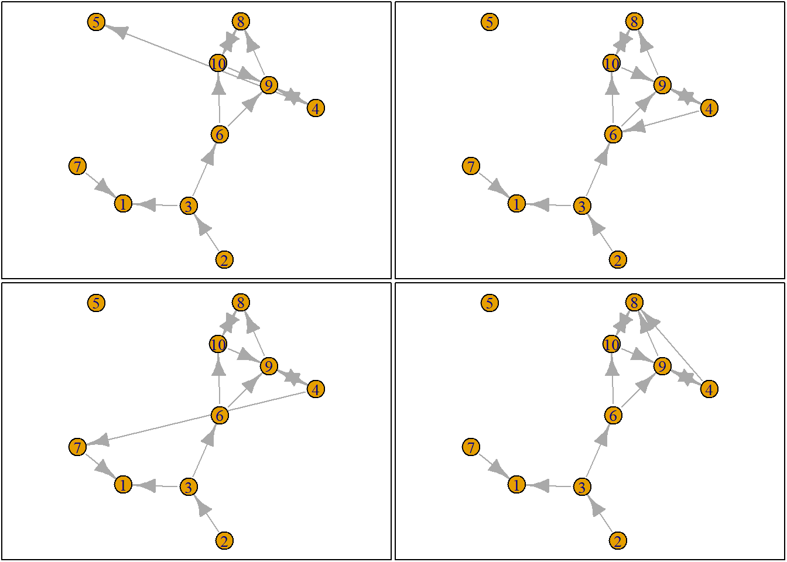
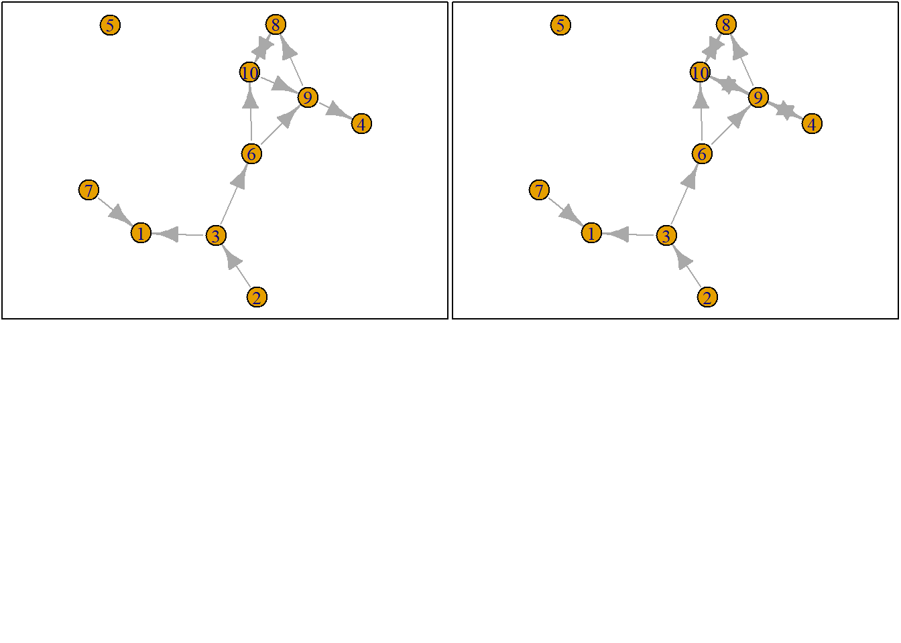

Start with clean workspace
rm(list = ls())Our goal is to understand the very basics of RSiena.
For a thorough introduction in RSiena:
See this workshop more as a teaser. I hope that after the workshop you become enthusiastic about the logic of RSiena and are able to understand the manual.
fpackage.check: Check if packages are installed (and install if not) in R (source).fsave: Save to processed data in repositoryfload: To load the files back after an fsavefshowdf: To print objects (tibbles / data.frame) nicely on screen in .rmdfpackage.check <- function(packages) {
lapply(packages, FUN = function(x) {
if (!require(x, character.only = TRUE)) {
install.packages(x, dependencies = TRUE)
library(x, character.only = TRUE)
}
})
}
fsave <- function(x, file = NULL, location = "./data/processed/") {
ifelse(!dir.exists("data"), dir.create("data"), FALSE)
ifelse(!dir.exists("data/processed"), dir.create("data/processed"), FALSE)
if (is.null(file))
file = deparse(substitute(x))
datename <- substr(gsub("[:-]", "", Sys.time()), 1, 8)
totalname <- paste(location, datename, file, ".rda", sep = "")
save(x, file = totalname) #need to fix if file is reloaded as input name, not as x.
}
fload <- function(filename) {
load(filename)
get(ls()[ls() != "filename"])
}
fshowdf <- function(x, ...) {
knitr::kable(x, digits = 2, "html", ...) %>%
kableExtra::kable_styling(bootstrap_options = c("striped", "hover")) %>%
kableExtra::scroll_box(width = "100%", height = "300px")
}
colorize <- function(x, color) {
sprintf("<span style='color: %s;'>%s</span>", color, x)
}RSiena: what do you think?RsienaTwoStep: this packages assesses the ministep assumption of RSiena but is useful for this tutorialdevtools: to load from githubigraph: plotting tools. For a tutorial on plotting networks, see our chapter in SNASSpackages = c("RSiena", "devtools", "igraph")
fpackage.check(packages)
# devtools::install_github('JochemTolsma/RsienaTwoStep', build_vignettes=TRUE)
packages = c("RsienaTwoStep")
fpackage.check(packages)See (Ripley et al. 2022) paragraph 2.1
RSiena models the evolution of network structures and/or the behavior of the social agents. It takes the current situation \(T_0\) as starting point. It estimates the ‘rules’ for the agents how to change their ties and/or behavior. If the model is specified correctly, these rules have led the situation at \(T_0\) to evolve into the situation observed at \(T_1\).
I would say these ‘rules’ are our micro theory of action.
Please note that our behavior may depend on the situation we are in. Similarly, the ‘rules’ we discover with RSiena are thus conditional on the situation at \(T_0\).
If we know the ‘rules’ of the social agents, we can also simulate future networks. And I think this aspect will help us to understand what the ‘rules’ of the social agents are and to understand what is estimated by RSiena.
Before we can start to simulate or understand RSiena we need to know what is meant by the ministep assumption.
Let us quote the manual
“The Stochastic Actor-Oriented Model can be regarded as an agent-based (‘actorbased’) simulation model of the network evolution; where all network changes are decomposed into very small steps, so-called ministeps, in which one actor creates or terminates one outgoing tie.”
“…it does not necessarily reflect a commitment to or belief in any particular theory of action elaborated in the scientific disciplines.”
“It is assumed that actors change their scores on the dependent variable (tie or behavior) such that they improve their total satisfaction […] with her/his local network neighborhood configuration.”
“Actors only evaluate all possible results in the local network neighborhood configurations that result from one ministep.”
The ministep is thus already an important ‘rule’ of how agents are allowed to behave. Does this mean the ministep is already theory, or just a modelling assumption!!??
Okay, but what does the SAOM of RSiena not do??:
This does not mean that RSiena cannot estimate (or better: ‘fit’) the evolution of networks/behavior that are the consequences of these more complex ‘rules’ or micro theories but it assumes actors only make ministeps.
Let us first start with a network. We will use the build in network of RsienaTwoStep.
Adjacency matrix
ts_net1#> [,1] [,2] [,3] [,4] [,5] [,6] [,7] [,8] [,9] [,10]
#> [1,] 0 0 0 0 0 0 0 0 0 0
#> [2,] 0 0 1 0 0 0 0 0 0 0
#> [3,] 1 0 0 0 0 1 0 0 0 0
#> [4,] 0 0 0 0 0 0 0 0 1 0
#> [5,] 0 0 0 0 0 0 0 0 0 0
#> [6,] 0 0 0 0 0 0 0 0 1 1
#> [7,] 1 0 0 0 0 0 0 0 0 0
#> [8,] 0 0 0 0 0 0 0 0 0 1
#> [9,] 0 0 0 1 0 0 0 1 0 0
#> [10,] 0 0 0 0 0 0 0 1 1 0net1g <- graph_from_adjacency_matrix(ts_net1, mode = "directed")
coords <- layout_(net1g, nicely()) #let us keep the layout
par(mar = c(0.1, 0.1, 0.1, 0.1))
{
plot.igraph(net1g, layout = coords)
graphics::box()
}Figure 3.1: ts_net1
So only one actor is allowed to make one ministep. But who? This is determined by the so-called rate function and it may depend on ego-characteristics of our social agents (e.g. male/female) and/or on structural-characteristics of our social agents (e.g. indegree, outdegree). And all this can be estimated within RSiena. For this course in RSiena it would go way too far to explain in detail the rate function. It is also not that important. More often than note, we simply assume that all actors have an equal chance of being selected to make a ministep.
For more information on the rate function see here.
Okay, we can thus randomly select an agent.
set.seed(24553253)
ego <- ts_select(net = ts_net1)
ego#> [1] 4Let us suppose we want to know what the possible networks are after all possible ministeps of ego who is part of ts_net1. That is, let us assume that it is ego’s turn (ego#: 4) to decide on tie-change. What are the possible networks?
The function ts_alternatives_ministep() returns a list of all possible networks after all possible tie-changes available to an ego given the current state of a network.
options <- ts_alternatives_ministep(net = ts_net1, ego = ego)
options
plots <- lapply(options, graph_from_adjacency_matrix, mode = "directed")
par(mar = c(0, 0, 0, 0) + 0.1)
par(mfrow = c(2, 2))
fplot <- function(x) {
plot.igraph(x, layout = coords, margin = 0)
graphics::box()
}
lapply(plots, fplot)
Which option (or ministep) will ego choose? Naturally this will depend on which network characteristics (or so-called statistics) ego finds relevant. Let us suppose that ego bases its decision solely on the number of ties it sends to others and the number of reciprocated ties it has with others.
Let us count the number of ties ego sends to alters.
ts_degree(net = options[[1]], ego = ego)#> [1] 2or for all options
sapply(options, ts_degree, ego = ego)#> [1] 2 2 2 1 2 2 2 2 0 2And let us count the number of reciprocated ties
sapply(options, ts_recip, ego = ego)#> [1] 1 1 1 1 1 1 1 1 0 1Assigment 1:
1a: write a function that counts the number of transitive triads for our ego
1b: write a function that counts for all ego’s the transitive triads and sums the result
In the package RsienaTwoStep there are functions for the following network statistics \(s\):
ts_degree()ts_recip()ts_outAct()ts_inAct()ts_outPop()ts_inPop()ts_transTrip()ts_transMedTrip()ts_transRecTrip()ts_cycle3()Please see ?ts_degree().
Update: there are quite a lot more. But not very relevant for us at this time.
See Ripley et al. (2022) (Chapter 12) for the mathematical formulation. Naturally, you are free to define your own network statistics.
But what evaluation value does ego attach to these network statistics and consequently to the network (in its vicinity) as a whole? Well these are the parameters, \(\beta\), you will normally estimate with RSiena::siena07().
Let us suppose the importance for:
So you could calculate the evaluation of the network saved in options[[4]] by hand:
\[f^{eval}_{n}(\mathbf{s_{i}},\mathbf{\beta}) = \mathbf{s_i}^\mathsf{T}\mathbf{\beta}, \]
with \(f^{eval}_{n}\) the evaluation function for agent \(n\). \(\mathbf{s_{i}}\) are the network statistics for network \(i\) and \(\mathbf{\beta}\) the corresponding parameters (or importance).
option <- 4
ts_degree(options[[option]], ego = ego) * -1 + ts_recip(options[[option]], ego = ego) * 1.5#> [1] 0.5Or you could use the ts_eval().
eval <- ts_eval(net = options[[option]], ego = ego, statistics = list(ts_degree, ts_recip), parameters = c(-1,
1.5))
eval#> [1] 0.5Now, let us calculate the evaluation of all possible networks:
eval <- sapply(options, FUN = ts_eval, ego = ego, statistics = list(ts_degree, ts_recip), parameters = c(-1,
1.5))
eval
print("network with maximum evaluation score:")
which.max(eval)#> [1] -0.5 -0.5 -0.5 0.5 -0.5 -0.5 -0.5 -0.5 0.0 -0.5
#> [1] "network with maximum evaluation score:"
#> [1] 4So which option will ego choose? Naturally this will be a stochastic process. But we see that option 4 has the highest evaluation. We use McFadden’s choice function (for more information see wiki), that is let \(P_{ni}\) be the probability that ego \(n\) chooses network/alternative \(i\). The choice function is then given by:
\[P_{n,i} = \frac{exp(\mathbf{s_i}^\mathsf{T}\mathbf{\beta} )}{\Sigma_{j=1}^J exp(\mathbf{s_j}^\mathsf{T}\mathbf{\beta} )},\]
with \(s_i\) a vector of the value of each network statistics for network \(i\) and \(\beta\) is the vector of parameter values. Hence, \(\mathbf{s_i}^\mathsf{T}\mathbf{\beta}\) is the value of the evaluation for network \(i\).
Let us force ego to make a decision.
choice <- sample(1:length(eval), size = 1, prob = exp(eval)/sum(exp(eval)))
print("choice:")
choice
# print('network:') options[[choice]]#> [1] "choice:"
#> [1] 10If we repeat this process, that is…:
…we have an agent based model.
Although we have not yet estimated an RSiena model, this is already the time to explain the interpretation of the estimated parameters. Suppose that you want to interpret the estimated parameter for the degree statistic.
Have a look at the possible options our ego has. Can you find two networks that only differ with respect to the number of ties, and more precisely only with respect to 1 (sending) tie?
For example, Option 1, has one more sending tie than option 4.
What is the probability ratio?:
\[ \frac{P_{n,i=1}}{P_{n,i=4}},\]
You will see that the denominator cancels out. Thus:
\[ \frac{P_{n,i=1}}{P_{n,i=4}} = \frac{exp(\mathbf{s_{i=1}}^\mathsf{T}\mathbf{\beta} )}{exp(\mathbf{s_{i=4}}^\mathsf{T}\mathbf{\beta} )} = exp(\mathbf{s_{i=1}}^\mathsf{T}\mathbf{\beta} - \mathbf{s_{i=4}}^\mathsf{T}\mathbf{\beta}) = exp({\beta_{degree}}) ,\]
and thus:
\[ log(\frac{P_{n,i=1}}{P_{n,i=4}}) = {\beta} ,\] …the log probability ratio that an ego will choose a network with one additional sending tie over a network without an additional sending tie is precisely our statistic parameter \({\beta}\).
Hopefully you see the interpretation similarity with a standard (multinomial) logit model.
But how many ministeps do we allow? Well, normally this is estimated by siena07 by the rate parameter.2 If we do not make this rate parameter conditional on actor covariates or on network characteristics, the rate parameter can be interpreted as the average number of ministeps each actor in the network is allowed to make before time is up. Let us suppose the rate parameter is 2 . Thus in total the number of possible ministeps will be nrow(net1)*rate: 20. For a more detailed - and more correct - interpretation of the rate parameter in siena07 see: www.jochemtolsma.nl.
Let us now simulate how the network could evolve given:3
ts_net1RSiena::siena07 has determined the parameters for these statistics are -1 and 1.5 respectively#> [,1] [,2] [,3] [,4] [,5] [,6] [,7] [,8] [,9] [,10]
#> [1,] 0 0 0 0 0 0 0 0 0 0
#> [2,] 0 0 1 0 0 0 0 0 0 0
#> [3,] 1 0 0 0 0 1 0 0 0 0
#> [4,] 0 0 0 0 0 0 0 0 1 0
#> [5,] 0 0 0 0 0 0 0 0 0 0
#> [6,] 0 0 0 0 0 0 0 0 1 1
#> [7,] 1 0 0 0 0 0 0 0 0 0
#> [8,] 0 0 0 0 0 0 0 0 0 1
#> [9,] 0 0 0 1 0 0 0 1 0 0
#> [10,] 0 0 0 0 0 0 0 1 1 0simnet2 <- ts_sim(
net1=ts_net1, #this is our start netwwork
statistics=list(ts_degree, ts_recip), #we only include to statistics
startvalues = c(2,-1,1.5)) # the start values for our rate parameter (automatically included), and our two statistics
simnet2#> [,1] [,2] [,3] [,4] [,5] [,6] [,7] [,8] [,9] [,10]
#> [1,] 0 0 0 0 1 1 0 0 0 0
#> [2,] 0 0 1 0 0 1 0 0 0 0
#> [3,] 0 0 0 0 1 1 0 0 0 0
#> [4,] 0 0 0 0 0 1 0 0 1 1
#> [5,] 0 0 0 0 0 0 0 0 0 0
#> [6,] 0 0 0 0 0 0 0 0 1 1
#> [7,] 0 0 0 0 0 0 0 0 0 0
#> [8,] 0 0 0 0 0 0 0 0 0 0
#> [9,] 1 0 0 1 0 0 0 0 0 0
#> [10,] 0 0 0 0 0 0 0 1 0 0Assignment 2:
2a: Use the same starting values and make 10 simulation runs (save results in a list or something). Hint, you may want to usets_sims()
2b: tweak the starting values (a couple of times) and for each parameter configuration make 10 simulation runs (once again save your results) 2c: for each of the simulated networks calculate to total number of ties and the total number reciprocated ties
2d: What did you learn from this exercise?
So now you have some grasp of the logic of RSiena. But how does the estimation work?
Well, that is quite complicated. But it goes something like this:4
Exercise 3:
Let us start playing with the build-in datasets ofRSiena:s501ands502.
Pick three statistics that you think will be relevant in estimating the network evolution for these datasets.
3a. For each of the above statistics, define the target values and program a function that calculates the target values.
3b. How would you pick smart starting values for the rate and degree parameters?
3c. Do 10 consecutive simulation runs. After each run you tweak your parameters?
Did you get close to your target values?
Some hints:
Calculating targets/outcome values:
# calculate the targets
ts_targets(net1 = s501, net2 = s502, statistics = list(ts_degree, ts_recip))#> Rate degree recip
#> 115 116 70# if you set the argument `net2` to be equal to your simulated network, you count the values
# observed in your simulated network`Defining your own statistics:
You can look at the source code to get inspiration:
ts_transTrip#> function (net, ego)
#> {
#> statistic <- 0
#> alters <- which(net[ego, ] == 1)
#> if (length(alters) > 1) {
#> for (alter1 in alters) {
#> for (alter2 in alters) {
#> statistic <- statistic + net[alter1, alter2]
#> }
#> }
#> }
#> return(statistic)
#> }
#> <bytecode: 0x00000193e361d580>
#> <environment: namespace:RsienaTwoStep>
#> attr(,"name")
#> [1] "transTrip"The no-reactivity assumption has been relaxed in the latest version of RSiena↩︎
: Naturally, it is a bit more complicated than that. In RSiena we have a choice between unconditional and conditional estimation. My description of the stopping rule refers to the unconditional estimation.↩︎
It is also possible to simulate networks within the RSiena package itself. But let us stick with functions from RsienaTwoStep for now.↩︎
‘it’ refers to estimation via the ‘Method of Moments’↩︎
Copyright © 2024 Jochem Tolsma